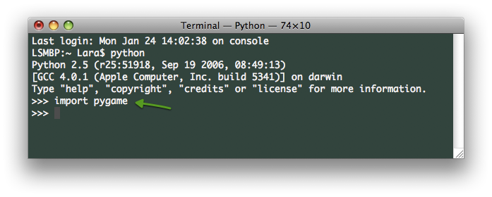
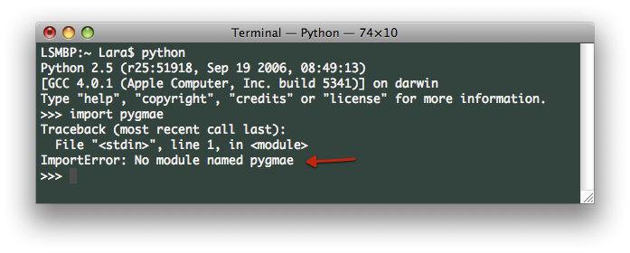

So, you want to play NODOI 2:1. Good idea! Follow the [relatively] Macintosh-centric steps below to get started.
To play NODOI 2:1 you will need to install a set of Python game modules called PyGame. Click on the appropriate tab to view instructions for doing so.
It's too easy! Just download and install PyGame.
This is pretty straightforward. Simply download, unzip, and install each of these in this order:
Thanks very much to this post on Geoff Ford's blog.
Unlike Macintosh, Windows does not come with any installation of Python, so you will need to install Python 2.5.5 first (although this is not the latest release, PyGame says its the version that works best). So, install the following in this order:
NOTE: These instructions are not tried and therefore may not be true.
python and hit Enter.>>>. Type import pygame and hit Enter.>>> shows up, then kudos! PyGame install success. If you get an ImportError: No module named pygame then do some Googling to figure it out. Check the screenshots below.*Install success looks like this:
Install fail and spelling mistakes look like this:
* Your Terminal window will probably not be this color.
Ok! If all of that is in order, it is time to:
Now follow these steps to run the game:
nodoi_sept9.zip>>> type exit() and hit Enter. You will then be back to something like LSMBP:~ Lara$.ls (stands for 'list') to see the folders within your current folder. Will look something like this:cd which, fittingly, stands for 'change directory'. If nodoi-2.1 is located in Downloads, then type Downloads/ and hit Enter to enter the directory. And if you use the command ls again you will see the contents of Downloads. On my computer, nodoi-2.1 is located on the Desktop:cd nodoi-2.1. python RUN_THIS.py and hit Enter. If you see the game window appear...congratulations! If not, check for spelling mistakes and try again!NOTE: when you click the "Arrow to Fase" and the game seems like it's frozen, go to your Terminal window and type in a number for your Fase.